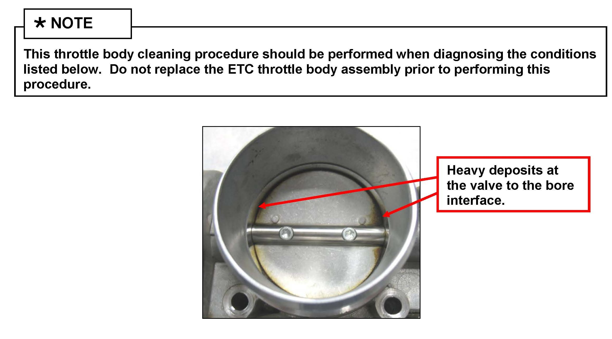
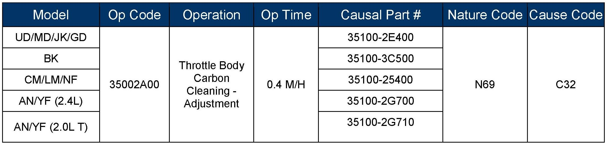
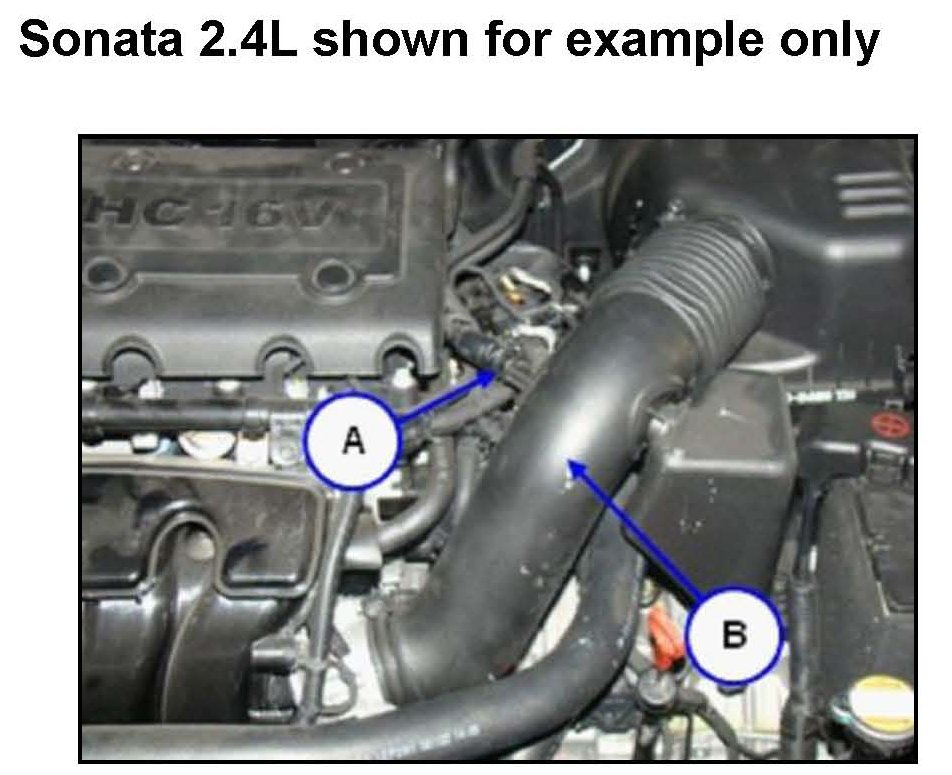
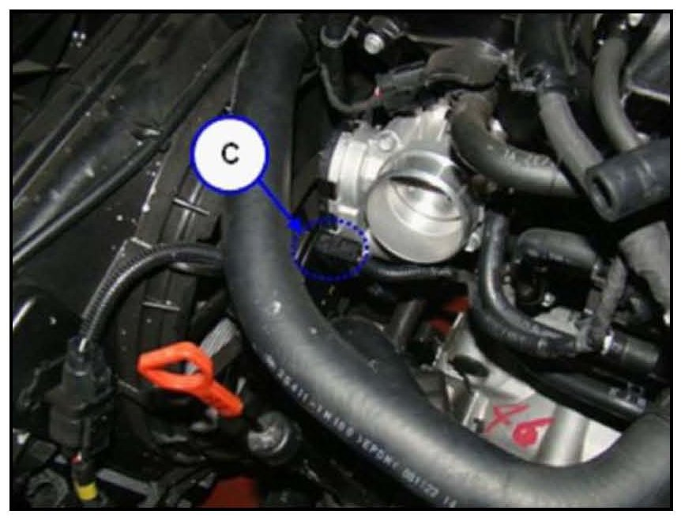
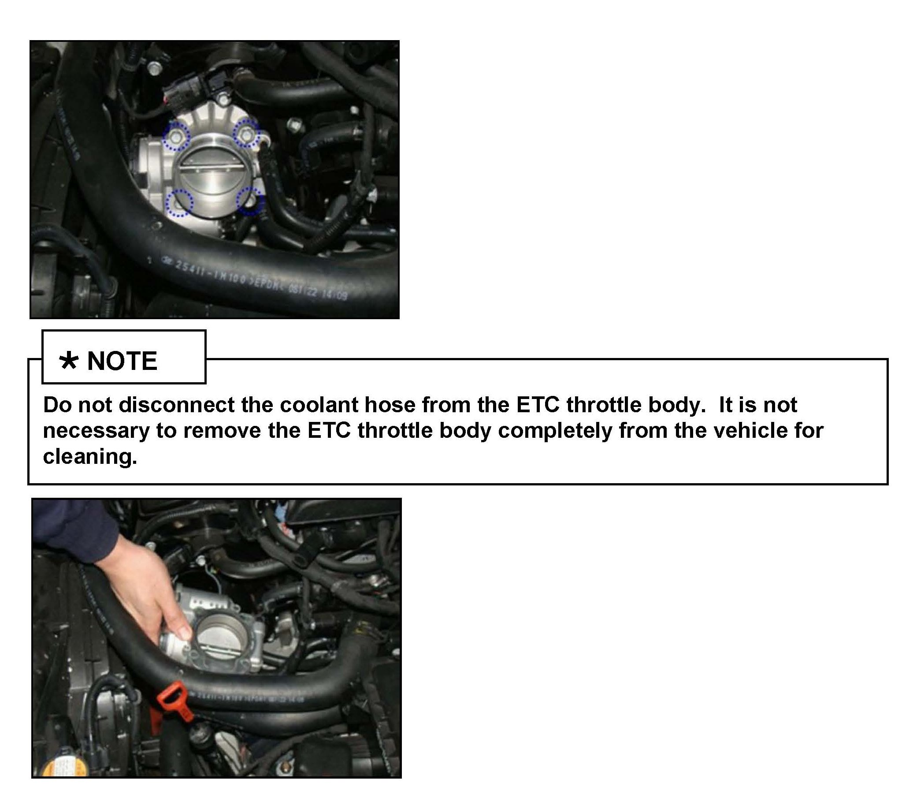
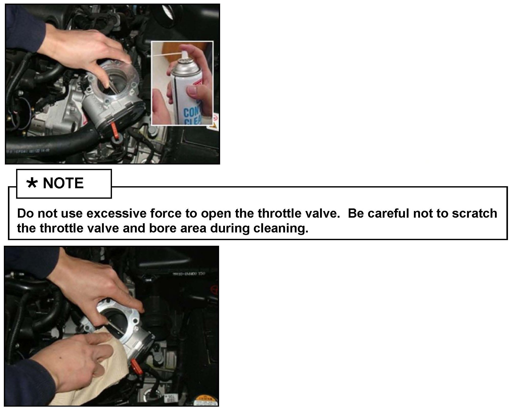
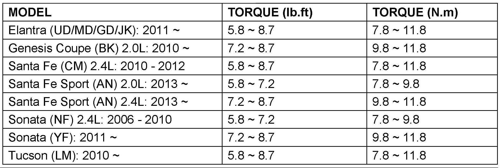

Engine Controls - MIL, Hard Start, DTC P2118, P2119, P2110
GROUPFUEL SYSTEM
DATE
APRIL 2013
NUMBER
13-FL-002
MODEL(S)
Elantra (UD/MD/GD/JK),
Genesis Coupe (BK),
Santa Fe (CM/AN),
Sonata (NF/YF),
Tucson (LM)
SUBJECT:
ETC THROTTLE BODY CLEANING
This TSB supersedes TSB 10-FL-009 to include Elantra and Santa Fe Sport Vehicles.
Description:

This bulletin provides the procedure to clean the Electronic Throttle Control (ETC) throttle body. If a vehicle exhibits the condition(s) listed below and deposits are found at the valve-to-bore interface inside the ETC throttle body, clean the throttle body using the procedure described in this bulletin.
Applicable Vehicles:
Elantra (UD/MD/GD/JK): 2011 ~
Genesis Coupe (BK) 2.0L: 2010 ~
Santa Fe (CM) 2.4L: 2010 - 2012
Santa Fe Sport (AN): 2013 ~
Sonata (NF) 2.4L: 2006 - 2010
Sonata (YF): 2011 ~
Tucson (LM): 2010 ~

Warranty Information:
Normal warranty applies.
Condition:
Any of the following conditions may be caused by throttle body deposits:
^ No start (due to throttle valve stuck closed or air flow significantly restricted)
^ Rough idle or fluctuating engine speed at idle (due to air flow restricted)
^ MIL "On" with DTC P2118 or P2119 occurring along with P2110:
^ P2118: Throttle Actuator Control Motor Current Range/Performance
^ P2119: Throttle Actuator Control Throttle Motor Current Range/Performance
^ P2110: Throttle Actuator Control System-Forced Limited Power
Service Procedure:

1. Turn the ignition OFF.
Remove the breather hose (A) and the air intake hose (B) to gain access to the ETC throttle body.

2. Disconnect the ETC connector (C) from the throttle body.

3. Remove the 4 ETC throttle body mounting bolts and then pull out the ETC throttle body away from the intake manifold.

4. Spray a carbon cleaner or throttle body cleaning solution on the throttle valve and bore areas where deposits have accumulated. Wipe off the deposits with a clean and soft shop towel (as shown in the pictures).
5. Reinstall all the removed parts in reverse order of removal after completing the ETC throttle body cleaning.
NOTE
If the ETC gasket has been damaged or contaminated by foreign substances; it must be replaced with a new one.

Torque the throttle body bolts to the following specifications:
6. Without starting the engine, turn the ignition ON (Turn the ignition key to ON position or press the Start-Stop Button two times without depressing the brake pedal) for at least 10 seconds and then turn OFF for at least 10 seconds. This procedure allows the ECM to automatically learn the throttle valve position.
The following Throttle Position Learning Enable Conditions must exist for learning to take place:
^ Battery voltage > 10V
^ Engine coolant temperature > 41.5F (5.3C)
7. Start the engine to confirm proper operation.
Check for any Diagnostic Trouble Code(s) and erase if any.